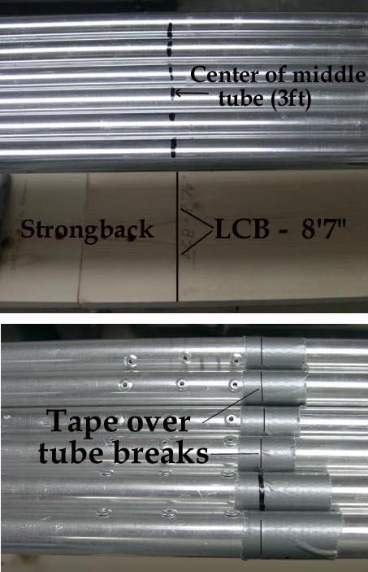

| Stringers (1 of 5) | Menu Last Page Next Page |
|  |
Positioning The Stringers
Mark the center 6ft tubes at the 3ft mark. This location is placed over the Center of Balance ( LCB) of the kayak 8ft 7in from the bow. (Sea Ranger)
Wrap all tube connections with tape to keep them from separating during frame construction. When taping, insure that the rivets of section 1 are aligned with the rivets of section 3. insure that all rivets are facing inward to prevent them from contacting the PVC skin when in use. During assembly and use, tape or spring pins can be used to secure the tubes. Note: There are 3 breakdown sections to the frame per stringer. The first and third sections have inserts. The center section does not. The front and rear sections will be trimmed at the stems. |